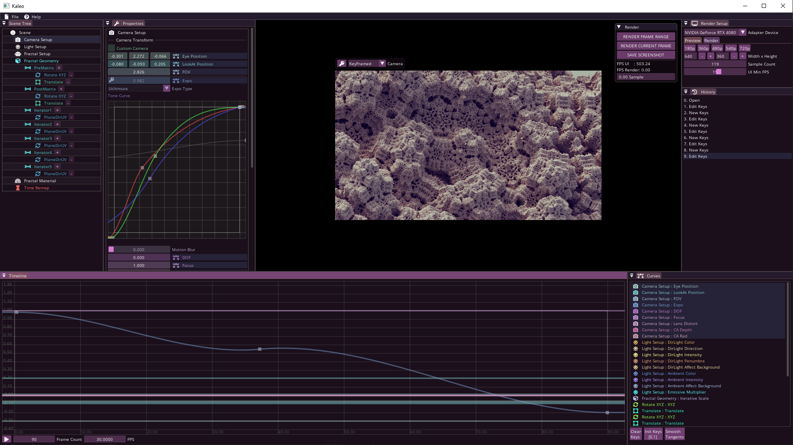
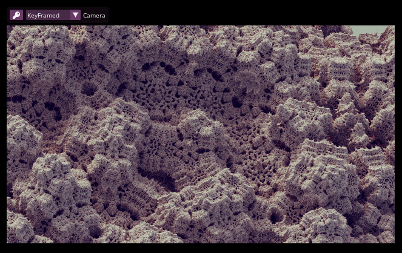
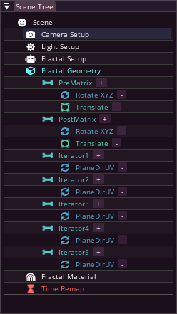
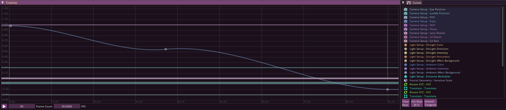
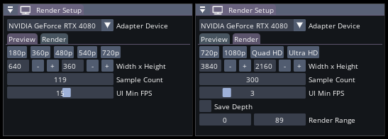
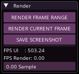

Start · UI Reference · Node Reference
The main element of the user interface is the scene-tree. Here you can adjust the geometry and color of your fractal, as well as the properties of the camera and lighting. If you change any parameter, the viewport will update immediately. If you select a node in the scene-tree, you can view and modify its settings in the properties window, and many of these settings are also output to curves in the timeline window, where you can animate them.
You can move, rotate, zoom, or keyframe the camera through the viewport.
To start rendering, you just need to set the resolution and maybe the sample count in the render setup window, and then you can press the "Render Current Frame" button, which will render the image in the viewport.


Here you can see your fractal, move the camera, and here you can also key the current camera parameters to the timeline with the key icon.
Camera Viewport Controls:
| Hotkey | Effect |
|---|---|
| Left Click + Drag: | Orbit Camera: rotates a camera about the target. |
| Middle Click + Drag: | Truck Camera: moves the camera parallel to the view plane. |
| Right Click + Drag: | Zoom. |
| Scroll Wheel: | Moving the camera along its axis. |
| Left Double Click on the Fractal: | Moves the view to the point you clicked on (also sets the DOF focus to this point). |
| Right Double Click on the Fractal: | Sets the DOF focus to the selected point. |
You can keyframe the camera to the current time on the timeline using the key icon in the top left corner of the viewport. You can also check and set whether you want to see the keyframed camera or the free camera.
If you start a render with the "Render Frame Range" button, it will use the keyframed camera for rendering. However, if you start the render with the "Render Current Frame" button, it will render the image in the viewport.

The scene-tree is the main element of the user interface, where you can set the lights, camera properties, and the shape and color of your fractal.
Nodes:
Here you can view and modify the settings of the selected node in the scene-tree.

Here you can find all the curves of the scene-tree collected in the Curve window.
In the Timeline window, you can view and modify the selected curves, and set the current time.
| Hotkey | Effect |
|---|---|
| Middle Click + Drag: | View panning. |
| Scroll Wheel: | Zoom along Y Axis. |
| Ctrl + Scroll Wheel: | Uniform zoom. |
| Hotkey | Effect |
|---|---|
| Left Click + Drag: | Move key, or multi selection. |
| Ctrl + Left Click + Drag: | Move the tangent vectors of the selected keys. |
| Delete: | Delete selected keys. |
| Left Double Click [ on the curve ]: | Add a new key. |
You can snap to the grid while moving a key or time by holding down the Shift key.

If you have more than one GPU, you can select which one the program uses here. ( Multi-GPU is not supported yet ) The further settings are divided into two tabs: - Viewport ( settings for the viewport ) - Render ( settings for rendering )
Resolution, and resolution presets: If the viewport is very laggy, it's worth lowering this.
Sample Count: Specifies how many samples a pixel should be taken. The more, the less noisy the image, but the longer the render takes.
UI Max FPS: How much to save on UI rendering during fractal rendering.
Render Range: Specifies which range of the Framecount set in the Timeline window you want to render.

You can start rendering with the resolution and sample count set in the Render Setup window. Every rendered image will be automatically saved in the "render" folder, and a fractal project file will be saved next to the image. Images and image sequences will be saved in 4x16 bit PNG format. You can find the Depthmap in the alpha channel. - Render Frame Range: renders all frames of the frame range set in the render setup window into an image sequence. - Render Current Frame: renders the image in the viewport. - Save Screenshot: saves the image in the viewport. (Even during rendering)